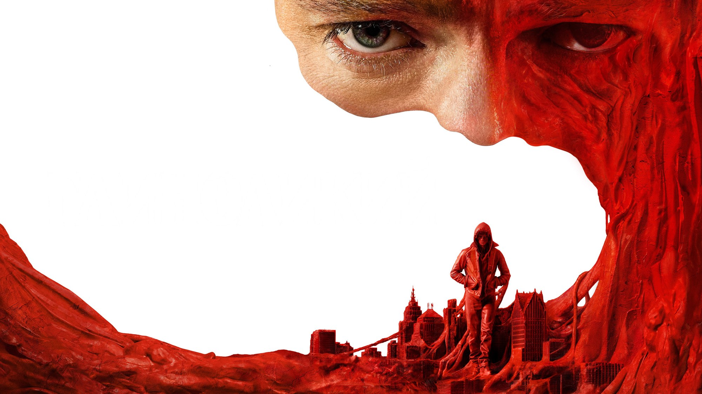

Clayface: recensione del body horror DC
Un supereroe DC girato come film dell'orrore: 76% su Rotten Tomatoes, 2 stelle su 5 per MYmovies e un pubblico che dà 94%
Chi si aspetta un cinecomic con le città che crollano può cambiare sala: Clayface è un film dell'orrore con la maschera da supereroe. James Watkins, regista inglese che conosce bene la paura, prende un nemico storico di Batman e lo gira come una lenta metamorfosi del corpo. La critica, a ottobre 2026, è con lui per il 76% su Rotten Tomatoes. Ma l'unica recensione italiana che abbiamo potuto leggere per intero, quella di MYmovies, si ferma a due stelle su cinque.
Di cosa parla Clayface?
Matt Hagen è un attore di successo di Gotham City, già candidato all'Oscar. Torna nel suo quartiere povero e compie un errore fatale: il risultato è un volto sfigurato. Dopo un intervento di chirurgia plastica fallito e il tradimento di chi gli stava vicino, uno scienziato gli propone una cura sperimentale rigenerativa. Il trattamento gli regala poteri straordinari, tra cui cambiare forma e rigenerare le cellule, ma lo spinge verso la mostruosità. Lo riassume così la scheda di MYmovies, e non vogliamo andare oltre per non rovinarvi la visione.
Il protagonista è Tom Rhys Harries, accanto a Naomi Ackie (la dottoressa Caitlyn Corr), Eddie Marsan, Max Minghella e David Dencik. La sceneggiatura è firmata da Mike Flanagan e Hossein Amini, la fotografia da Rob Hardy. Secondo Wikipedia, le riprese sono andate dal 31 agosto al 1 novembre 2025 a Liverpool e ai Warner Bros. Studios di Leavesden, con un budget stimato tra i 30 e i 44 milioni di dollari: una cifra contenuta per un film DC, e si capisce dal tipo di racconto.

Cosa ne dice la critica
A ottobre 2026 Rotten Tomatoes assegna a Clayface il 76% su 149 recensioni, con il pubblico al 94%. Metacritic, secondo Wikipedia, si ferma a 59 su 100 su 44 recensioni, un giudizio «contrastato», e il CinemaScore è A-. La sintesi di Rotten Tomatoes parla di un film con un'identità propria, che richiama i classici del body horror, impiega tempo a costruirsi e poi diventa un thriller di vendetta soddisfacente.
Le voci a favore: Kyle Smith del Wall Street Journal apprezza l'approccio grottesco e il fatto che non ci siano scene d'azione gonfiate, a favore di paura e umorismo nero. Peter Travers gli dà due stelle e mezzo su quattro e lo considera un buon intrattenimento da Halloween. Abhimanyu Mathur dell'Hindustan Times arriva a quattro stelle su cinque: per lui i racconti di supereroi possono avere la loro versione dell'orrore senza perdere autenticità.
Le voci contrarie: Amy Nicholson del Los Angeles Times lo trova meno profondo di come si presenta, perché finge una complessità morale che poi non gestisce. In Italia Andrea Fornasiero di MYmovies gli dà due stelle su cinque e lo definisce un body horror dalle formule abusate, con una trasformazione tragica che arriva troppo tardi e una vendetta privata che manca dell'ironia dei film a cui somiglia.
Un dato di contesto aiuta a leggere queste divisioni. Secondo Wikipedia la premiere mondiale è stata il 13 ottobre 2026 a Los Angeles, dieci giorni prima dell'uscita americana: la critica ha avuto quindi poco tempo per discutere e le cifre di Rotten Tomatoes e Metacritic, calcolate su 149 e 44 recensioni, possono ancora spostarsi nelle prossime settimane. Un 76% di oggi non è il 76% definitivo, e conviene guardarlo insieme ai nomi di chi scrive.

Il nodo: orrore vero o posa?
Mettendo le cinque voci una accanto all'altra, la linea di frattura è chiara. Smith, Travers e Mathur premiano il film per ciò che dichiara di essere: un pezzo di genere, sporco e fisico, adatto alla stagione. Nicholson e Fornasiero gli chiedono di più, e lo trovano o superficiale o in ritardo sul proprio dramma. Nessuno dei due fronti dice che il film sia stupido: discutono su quanto il dolore di Matt Hagen sia reale o soltanto un pretesto per l'effetto.
Per noi è la domanda che conta: un film che mette al centro un uomo che perde il proprio volto e la propria carriera non può limitarsi a mostrare la trasformazione, deve farci sentire cosa si è perso. Ed è qui che i pareri divergono. L'unico modo di rispondere è andare in sala con la giusta aspettativa. Il divario tra il 76% della critica e il 94% di chi ha già votato suggerisce che il pubblico perdona meglio gli stereotipi quando il mostro funziona. Noi non abbiamo ancora un parere tecnico sugli effetti: per ciò che riguarda la resa del corpo di argilla ci affidiamo alle recensioni lette, e nessuna di quelle aperte entra nei dettagli.

Vale la pena vederlo al cinema?
Se cercate un film per la settimana di Halloween, con un mostro in primo piano, un po' di sangue e niente universo da recuperare, la critica che abbiamo letto vi dà buone ragioni. Se invece vi aspettate un cinecomic spettacolare o un dramma psicologico di spessore, tenete conto delle riserve di Nicholson e Fornasiero. Il film dura 108 minuti secondo MYmovies e Wikipedia (TMDB indica 109), è distribuito da Warner Bros Italia. Maitland McDonagh, nelle voci raccolte da Rotten Tomatoes, lo descrive come molto crudo, con un fondo psicologico scuro e più attenzione all'orrore che all'eroismo: se non reggete le immagini forti, o pensate di andarci con ragazzi più piccoli, controllate prima la classificazione ufficiale.
Clayface fa una scelta netta: mette l'orrore corporeo davanti all'eroismo, e per i critici che abbiamo citato questo basta, con il 76% su Rotten Tomatoes e il 94% del pubblico. Se da un lato Smith e Mathur lodano il tono grottesco e il coraggio di non fare un cinecomic classico, dall'altro Nicholson e Fornasiero lo accusano di una profondità solo dichiarata e di un dramma che arriva tardi. Lo consigliamo a chi ama i mostri e il genere, meno a chi cerca spettacolo da blockbuster.
Domande frequenti
Quando è uscito Clayface in Italia?
Nelle sale italiane dal 22 ottobre 2026, secondo MYmovies, che indica come distributore Warner Bros Italia. Negli Stati Uniti l'uscita è il 23 ottobre, secondo Wikipedia.
Di cosa parla Clayface?
Matt Hagen, attore nominato all'Oscar, viene sfigurato dopo un errore fatale nel suo quartiere d'origine. Uno scienziato gli offre un trattamento sperimentale che gli dà il potere di cambiare forma, ma il prezzo è una discesa nella mostruosità.
Che voto ha Clayface per la critica?
A ottobre 2026 Rotten Tomatoes dà il 76% su 149 recensioni e Metacritic 59 su 100 su 44 recensioni; il CinemaScore è A-, secondo Wikipedia. MYmovies assegna 2 stelle su 5.
Quanto dura Clayface?
108 minuti, secondo MYmovies e Wikipedia. La scheda di TMDB indica 109.